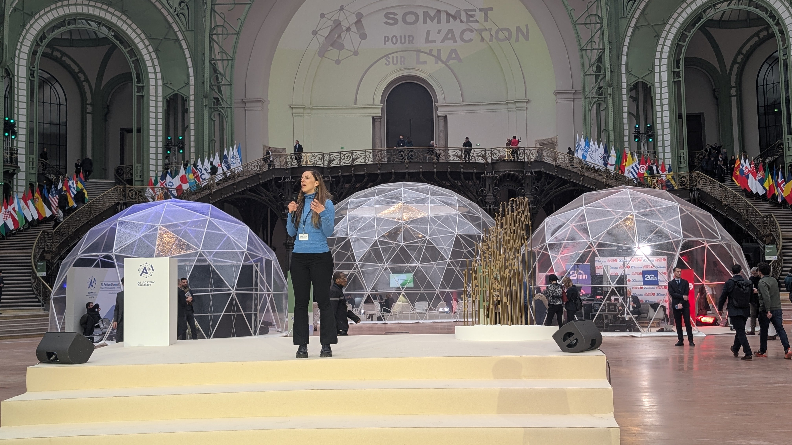
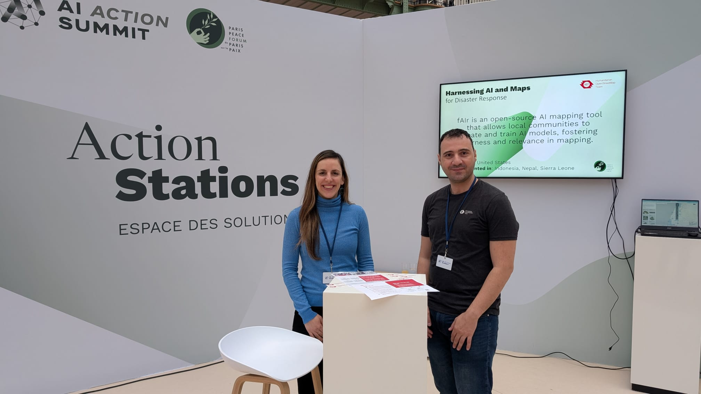

Presenter & Exhibitor · Humanitarian OpenStreetMap Team


Co-presented HOT's fAIr AI-assisted mapping service at the AI Action Summit 2025 alongside Petya Kangalova. HOT was one of 10 projects selected to pitch on stage at an action station at the Grand Palais in Paris — one of the most high-profile AI events in the world, convened by the French government as a global moment to shape responsible AI.
The presentation demonstrated fAIr's approach to community-led, open-source AI for humanitarian mapping — showing how local communities can train their own AI models to detect buildings, roads, and infrastructure from satellite imagery, then validate and upload data directly to OpenStreetMap. The event reinforced the importance of keeping AI human-centred, community-driven, and grounded in local knowledge.
HOT Blog — The Paris Chronicles